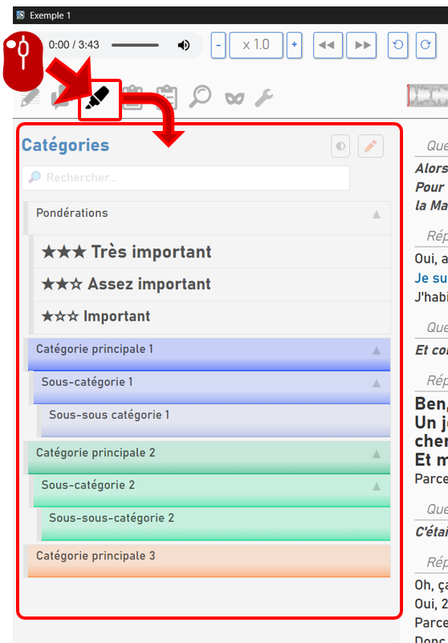
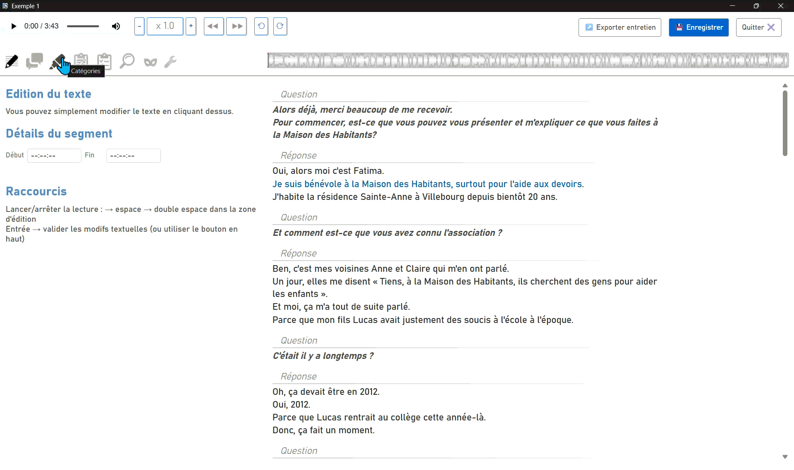
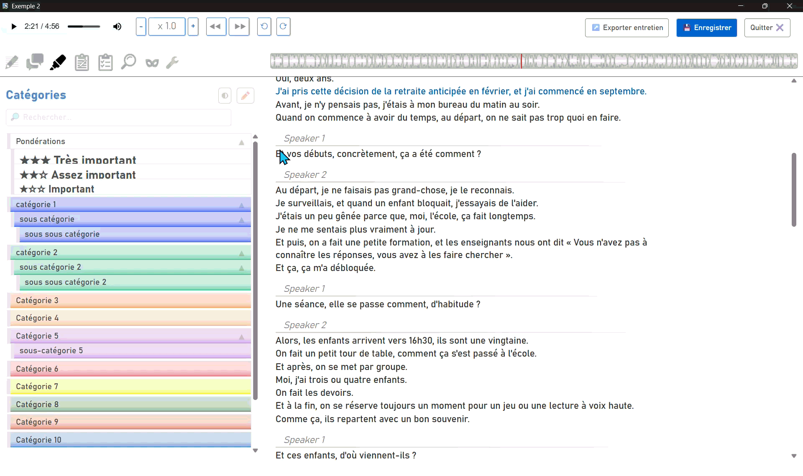
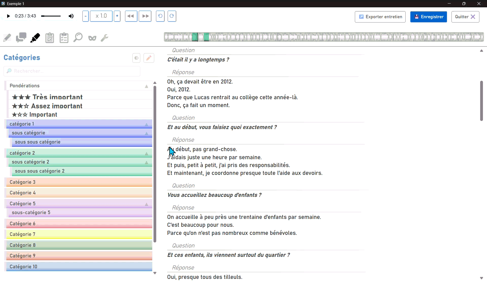
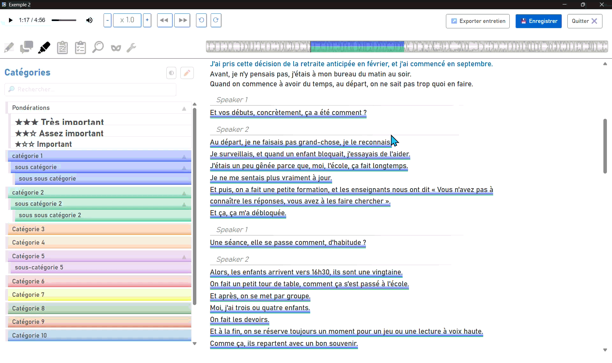

Coder l'entretien (mode "Catégories")
La fenêtre d’édition vous permet d’ajouter des marqueurs colorés ou des formatages spécifiques sur le texte pour pouvoir collecter ensuite tous les passages relevant d’une même catégorie.
La manière d’ajouter ces catégories est explicitée dans la partie « Créer des catégories thématiques de codage ». Nous allons voir ici comment concrètement les affecter au texte.
Pour accéder à cette fonctionnalité, cliquez sur l'onglet correspondant.

Fonctionnement du mode catégories
Lorsque vous êtes dans le mode catégorie, Sonal s’attend à ce que vous sélectionniez des passages du texte pour les marquer. Le comportement du sélecteur est donc spécifique.
La logique de codage est la suivante :
- 1 – sélectionner un passage
- 2 – choisir une ou plusieurs catégorie(s)
- 3 – sortir de la portion catégorisée
Sélectionner un passage à catégoriser
La manière la plus simple de sélectionner une partie est de la surligner avec la souris. Sonal sélectionne alors le passage (en incluant l’intégralité du premier et du dernier mot de la sélection — plus la ponctuation finale s’il y en a) et surligne en jaune la partie sélectionnée. Un menu apparaît sur la droite de la fenêtre pour mettre à disposition certaines fonctions et signifier que vous êtes en train de coder.

Vous pouvez également cliquer sur le premier mot que vous voulez sélectionner. Tous les mots suivants que vous survolerez ensuite seront surlignés en jaune jusqu’à ce que vous cliquiez sur le dernier. C’est la solution la plus adaptée aux sélections longues mais cela peut être troublant si ce n’est pas volontaire. Pour vous débarrasser de la sélection, cliquez sur Echap ou cliquez sur un mot au hasard et abandonnez la sélection.

Choisir une ou plusieurs catégorie(s)
Une fois que vous avez sélectionné la partie voulue, Sonal s’attend à ce que vous sélectionniez une ou plusieurs catégories à affecter au passage. Pour ce faire, il suffit de cliquer sur les catégories voulues dans le panneau à gauche de la fenêtre. La sélection et la désélection se font d’un simple clic. Les catégories non sélectionnées sont légèrement moins lumineuses, les catégories sélectionnées sont précédées d’un ✔️.
Si vous avez beaucoup de catégories, vous pouvez aussi utiliser la fonction « mur » qui vous affiche toutes vos catégories en colonnes dans une fenêtre spécifique. Cliquez sur le + dans le menu de sélection à droite.

Sortir de la portion catégorisée
Une fois la catégorisation opérée, vous pouvez quitter la portion catégorisée de différentes manières. En tapant « Echap », en fermant le menu contextuel à droite, en cliquant dans la marge à droite du texte ou… en démarrant une nouvelle sélection.
Superposer plusieurs catégorisations
Il est non seulement possible d'affecter plusieurs catégories à un même passage, mais il est aussi tout à fait possible d’emboiter plusieurs catégorisations.

Modifier une catégorisation existante
Si vous avez catégorisé un passage et que vous voulez revenir sur vos choix, ou annuler la catégorisation, il vous suffit de cliquer sur l’un des mots du passage catégorisé. La partie est rouverte en édition et vous pouvez changer ce qui doit l’être.
